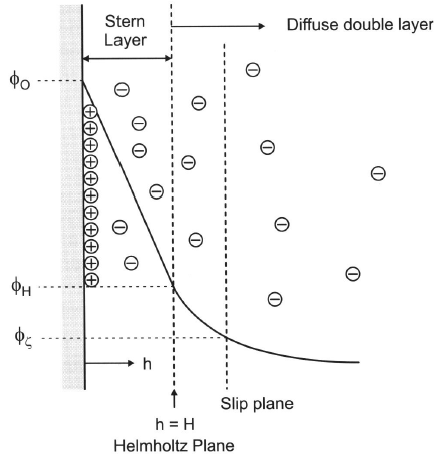
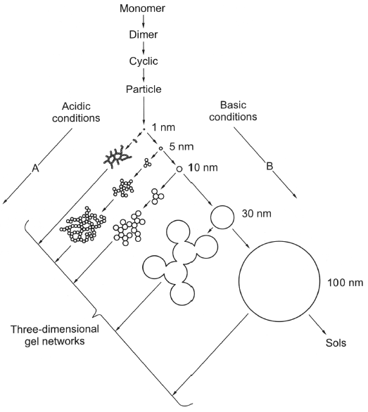

Sol-gel (my slave for LNMO)
You start with a solution, form a gel for heterogeneous dispersion of atomically mixed atoms (hopefully), then decompose gel and sinter -> dream of perfect atomically mixed compounds
- Formation of an oxide netowrk through polycondensation reactions of a molecular precursor in a liquid.
- Sol: stble dispersion of colloidal particles or polymers in a solvent.
- Gel: 3D-continous network
- Prevent problems w/coprecipitation
- Results in smaller particles
- Developed in 1960 due to nuclear industry
- Quick clay
- Shapes: Fibres, powders, xerogel films -> dense ceramic film
- Ex: PZT piezoelectric, stoichi hard to control via ceramic method (and needs 1100\(^\circ\)C); but w/sol-gel it is easier and only 570-700\(^\circ\)C needed.
Theory
Sol
- Colloidal particles not dissolved, but should not agglomerate or sediment.
- Agglomeration (by Van der Waals) is avoided by:
- Electrostatic repulsion: Charges particle surface and makes them repel. Important for colloidal system.
- Steric hindrance: Particles adsorb a thick layer of organic molecules(SURFACTANTS). Works best in concentrated dispersions. Branched adsorbates works best. Usual for nanomaterials.
Point of Zero Charge (PZC)
- e\(^-\)-static repulsion is because: Surface/particle is covered by ionic groups which determines surface potential. Counter ions in solution covers this layer, shielding the rest of the sol from the surface charges.
- For hydroxides, surface potential is determined by pH
- pH where particles is neutral is the PZC
- pH > PZC -> surface is - charged
- pH < PZC -> surface is + charged
| Compound | PZC(pH) |
|---|---|
| MgO | 12 |
| Al\(_2\)O\(_3\) | 9 |
| TiO\(_2\) | 6 |
| SnO\(_2\) | 4.5 |
| SiO\(_2\) | 2.5 |
- Size of surface potential \(\phi_0\) depends on difference between pH and PZC
Double layer
- Particle moves to electrode with opposite charge and carry adsorbed layer + counter ions
- “slip plane” divides what moves with particle and rest of sol.
- Slip plane potential = Zeta Potential \(\phi_Z\)
- Iso-electrical point (IEP) is which pH makes \(\phi_Z\)=0
- Larger \(\phi_Z\) = greater stability colloid. (Should be >30-50mV)
- Given same surface potential, repulsive forces will increase with larger particles.

Coagulation / Flocculation
- Occur if:
- \(\phi\) is lowered (by pH)
- Increase # counter ions (decreases thickness of doublelayer)
- Increase in
- In some cases, it can be re-dispersed:
- Called Peptizing
- Removing counter ions (e.g. by washing or adding charged ions(reestablishes double layer))
Netowork formation (gelation)
- Gel-time: The time it takes to gelate enough to put the container upside down. 
Ostwald ripening: Can help with creating monodisperse particle sizes Ageing: The gel is still alive and will continue gelation Drying: Maintained structure -> aerogel, collapsed -> Xerogel
Applications
Silicates
- Forms gel easily: Not very electropositive and not susceptible to nucleophilic reactions.
- Sol-Gel in some steps:
- Hydrolysis + condensation of molecules
- Formation of Sol
- Gelation(sol-gel transformation)
- Ageing + Drying
Hydrolysis + condensation
- Alkoxides / silanols -> Siloxane groups (Si - O - Si)(with 3 dangling Si bonds)
- Hydrolysis: Si-O-R + H\(_2\)O -> Si-OH + ROH
- Condensation: Si-OH + Si-OR -> Si-o-Si + ROH
Slica-gel precursors
| - | Water-glass (Na\(_2\)SiO\(_3\)) | Si alkoxide |
|---|---|---|
| Dissolved in: | water | organics (alcohol) |
| Reactive part: | silanol | hyrolysis (OR exchanged for OH) |
| Gelation starts: | with pH change | Addition of water |
More for alkoxides:
- It is more complex, but might give more control
- 2 reaction paths:
- pH< PZC -> species is positive
- pH > PZC -> species is negative
- Acid or base must be used to catalyze reaction
Condensation parameters:
- Precursor type
- Water-alkoxide ratio (R\(_W\))
- Catalyst type
- Solvent type
- Temp , pH
- Relative + absolute consentration of reactants
- electron density on Si
- Acid catalyzed demands high electron density
- Base catalyzed demands low electron density
- Acid catalyzed -> straight chains
- Base catalyzed -> Branched networks
- R\(_W\) = 1 -> hydrolysis, no condensation
Metals
- Can create gels
- Often octahedrally coordinated with Oxygen
- Less free than Si tetrahedrons
- Hydrolysis of Ti(OR)\(_4\) 10\(^5\) faster than Si
Examples
- Pb(Zr\(_{0.48}\),Ti\(_{0.52}\))O\(_3\)
- Start w/oxides which needs high temp to decompose
- Need stoichi control + homogeneity
- Pb is volatile, so it makes it stay.